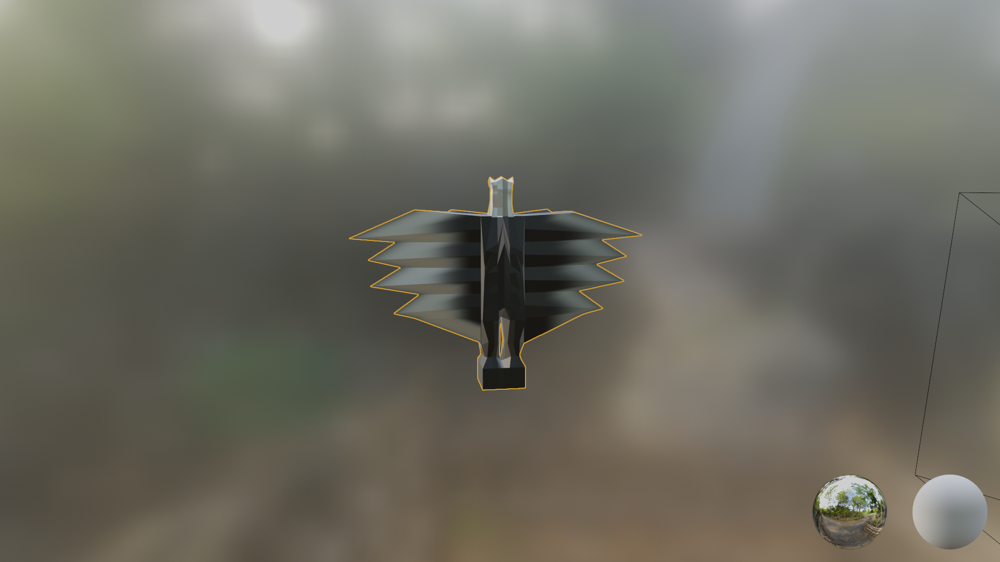

Kings and Queens

Moodboard
I was inspired by the movie Brother Bear, a childhood favorite of mine. The movie is heavily inspired by Native American legends, art, and culture. From there I was influnced by the huge stylised totems that are often made by native tribes across America. Where I grew up there were many of these totems often depicting animals. A common theme to many of these totems is a bird. While I am not from this culture myself and wanted to avoid any possible appropriation, I took this rough idea of a bird totem and decided to get to sketching.
I wanted the chess piece to be like a mini totem or statue of a bird. Drawing on the totems for inspiration I chose to have its wings extending out like it was about to take flight. With this rough idea in mind I went to Blender to start on the chess piece.

Dimensions

Full render side view

Full render back view
The render took quite a while to finish but was done all in one attempt. I used a mirror tool to get the semmetry of it consistent and used the sculpting tool for all the fine touches and to edit the porportions. The end result is pretty similar to what I had imagined, though I had wanted the wings to be more fleshed out. I got stuck trying to have them extend out further and wasn't able to get it to work so I settled to have them against the body. I do think it hits all of the keywords I was striving for from my moodboard, and overall I am happy with the result.